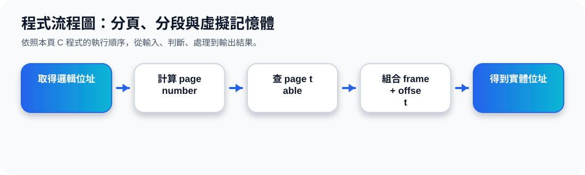

二、Paging：Page 與 Frame 的對應
核心觀念 Paging 的重點是「切成同樣大小的區塊」。Logical memory 被切成 pages，Physical memory 被切成 frames，兩者大小相同，再用 page table 做對應。
Program Pages
Frames
Paging 對應動畫
簡單記法：Page 是「程式邏輯上的頁」；Frame 是「實體記憶體中的格子」。Paging 讓程式不必連續放在記憶體中。
三、Demand Paging：需要哪一頁，才載入哪一頁
Demand Paging 的觀念是：程式不一定要全部放進記憶體。當程式需要某一個 page 時，OS 才把該 page 從磁碟載入到記憶體 frame 中。
傳統想法
程式全部載入記憶體後才執行，記憶體需求較大。
Demand Paging
只載入目前需要的 page，其他部分仍可留在 disk 中。
Demand Paging / Segmentation 動畫
四、Demand Segmentation：以程式邏輯區段為單位
Demand Segmentation 與 Demand Paging 很像，差別在於 segmentation 通常依照程式的邏輯結構切割，例如 main program、subprogram、function、stack 或 data segment。
Paging 偏向固定大小切割；Segmentation 偏向依照程式邏輯意義切割。
五、Virtual Memory：磁碟與記憶體合作
Virtual Memory 的重點是讓程式看到一個較大的「虛擬記憶體空間」。實際上，只有目前需要的部分在 physical memory，其餘可放在 disk 中。
Disk / Virtual Memory
保存完整程式與暫時不用的 pages / segments。
Physical Memory
只放目前正在使用或即將使用的部分。
優點
程式可以比實體記憶體大，也能讓多個程式同時執行。
代價
若頻繁在 disk 與 memory 間交換，速度會變慢。
程式流程圖與流程講解
程式流程圖：分頁、分段與虛擬記憶體

流程講解
可編輯 C 程式範例與線上編輯器
可編輯 C 程式：分頁、分段與虛擬記憶體
這段程式依照上方流程圖設計，包含中文註解，適合貼到線上編輯器直接執行與修改。
程式題目完整教學內容
程式題目完整教學：分頁、分段與虛擬記憶體
一、程式題目講解
用簡化公式示範 logical address 如何透過 page table 轉成 physical address。
核心觀念是 page、offset、frame：邏輯位址除以 page size 得到頁號，取餘數得到位移量，再查表找到 frame。
二、完整程式碼
以下程式碼可直接複製到 C 語言線上編譯器執行。程式中已加入中文註解，說明主要變數、判斷流程與輸出目的。
#include <stdio.h>
/*
主題 7：分頁與虛擬記憶體
功能：模擬 logical address 轉 physical address。
*/
int main(void) {
int pageSize = 100;
int pageTable[] = {5, 9, 2, 7}; // page -> frame
int logicalAddress = 245;
int page = logicalAddress / pageSize;
int offset = logicalAddress % pageSize;
int frame = pageTable[page];
int physicalAddress = frame * pageSize + offset;
printf("Logical Address = %d\n", logicalAddress);
printf("Page = %d, Offset = %d\n", page, offset);
printf("Frame = %d\n", frame);
printf("Physical Address = %d\n", physicalAddress);
return 0;
}三、程式執行結果
Logical Address = 245
Page = 2, Offset = 45
Frame = 2
Physical Address = 245結果說明：核心觀念是 page、offset、frame：邏輯位址除以 page size 得到頁號，取餘數得到位移量，再查表找到 frame。 程式依照設定的資料與控制流程逐步輸出，因此可以從結果看到每個步驟的執行順序與狀態變化。
四、程式流程圖與流程圖說明
本頁上方已提供對應的程式流程圖，圖中以「開始、資料設定、條件判斷、重複處理、輸出結果、結束」呈現程式執行順序。
程式計算 page 與 offset，從 pageTable 找到 frame，最後用 frame * pageSize + offset 得到實體位址。
五、重要函數與語法說明
/ 整數除法用來求頁號；% 取餘數用來求 offset；pageTable[] 模擬頁表；printf() 輸出轉換過程。
六、整體說明
本題的學習重點是把作業系統概念轉成可觀察的 C 程式流程。學生應先理解題目概念，再對照程式碼、流程圖與執行結果，掌握變數設定、條件判斷、迴圈處理與輸出結果之間的關係。